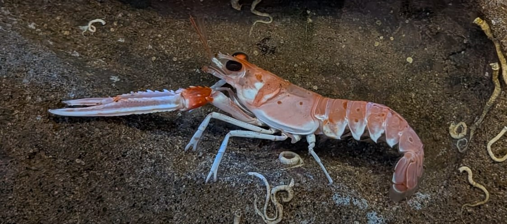

Langoustine commune
Nephrops norvegicus
La langoustine est un crustacé fouisseur vivant dans des terriers creusés dans les fonds vaseux. Très appréciée en gastronomie, elle est l'une des principales espèces exploitées par la pêche européenne.
Informations scientifiques
| Nom scientifique | Nephrops norvegicus |
|---|---|
| Nom commun | Langoustine commune |
| Famille | Nephropidae |
| Ordre | Decapoda |
| Classe | Malacostraca |
| Habitat | Fonds vaseux. |
| Répartition | Atlantique Nord-Est, Manche, mer du Nord et Méditerranée. |
| Profondeur | 15 à 800 m. |
| Taille | 18 à 25 cm. |
| Alimentation | Petits invertébrés, poissons et charognes. |
Description
Contrairement au homard, la langoustine passe une grande partie de sa vie à l'abri dans un terrier qu'elle entretient régulièrement.
Elle ne sort principalement qu'à la tombée de la nuit pour rechercher sa nourriture, ce qui en fait une espèce majoritairement nocturne.
Ses longues pinces fines et son corps allongé la distinguent facilement des autres crustacés décapodes européens.